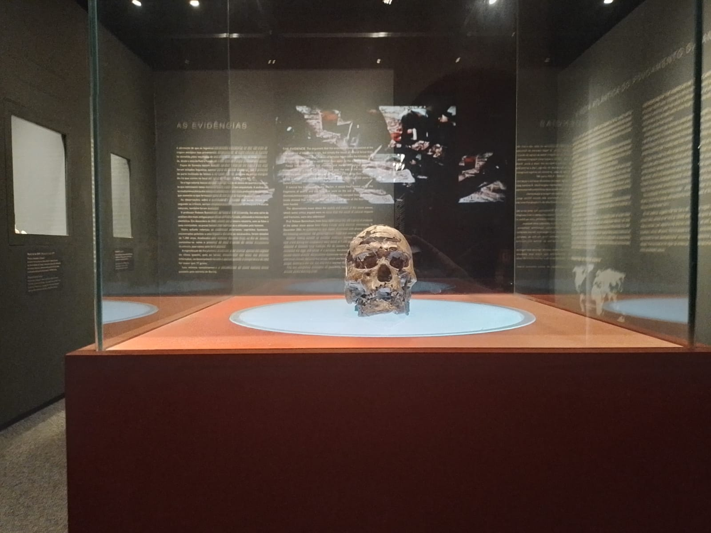

Museu do Homem Americano
Um espaço dedicado à história, às pesquisas e aos vestígios deixados pelos povos pré-históricos da região.
Sobre o museu
O Museu do Homem Americano está ligado à Fundação Museu do Homem Americano, conhecida como FUMDHAM. O espaço apresenta ao público parte da importância do patrimônio cultural deixado pelos povos pré-históricos na região da Serra da Capivara.
A exposição reúne informações sobre pesquisas realizadas durante décadas na região, ajudando os visitantes a entenderem melhor a ocupação humana, os registros arqueológicos e a importância da preservação desse patrimônio.
Por que visitar?
O museu é uma ótima opção para quem deseja compreender melhor a história da Serra da Capivara. Ele complementa a visita aos sítios arqueológicos e ajuda o visitante a perceber a importância científica e cultural da região.
Galeria do local
